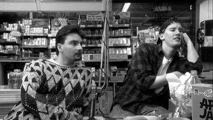

Me Time!
Take some time out of your day and do something for yourself, it costs nothing.
Comedy
[ YOUNG FRANKENSTEIN ]: A brilliant and hilarious Mel Brooks movie. Written by an insipred Gene Wilder, wich also interpretate
the protagonist:The young doctor Frankenstein. The young Doctor receive a testament from his old crazy uncle (famous for his bizarre works on give back lifes on death bodies).
The young scientis decide to travel for Transilvania to discover his uncle testament...
A sequences of funny and original misadventures will bring to laugh from the start of the movie
till the credits.

[ CLERKS ]:Great low budget commedy, written, produced and directed by Kevin Smith. The entire movie costed only $27,575 and shooted entirely with just two location: a video store
(where Kevin Smith worked for real) and a small market. The original script and the funny fresh ideas, wich are taken from every-day life of two friends, Dante and Randal,that have simple jobs but don't have
idea of what to do in the future. every customer that enter their shop became a "prey" of the jokes of one of Randal, while Dante try to make everything to don't let them put in troubles.
In the meanwhile the story is spiced up by the presence of two bizarre pushers Jay and Silent Bob, that lay all day on the wall of the clerks shop trying to attract some "customer" and
making some deep dubious "philosophical" convarsation about the meaning of life...
Sci-Fi/Fantasy
[ STARWARS ]: "Long time ago in a Glaxy far far away..." that's the start
of one of the most epic and loved saga in the hystory of the cinema, created by the genius mind of George Lucas.
The entire saga is adapt to every kind of public. The original idea behind was to create a saga that mixed knights mythology and
romance in a imaginary futiristic space scenario, with also a spiritual accent from buddist religion (the power of "the Force" as powerful zen energy)
everything elaborated in a romantic and exciting sci-fi adventure story.
[ 2001 A SPACE ODYSSEY ]:Probably one of the most beautifull, deep, symbolic and intelligent movie
ever made. From the director Stanley Kubrick, this movie saw the light in theatres in 1968... even if more than
40 years are past, this immaginary and philosophic masterpiece is an eternal and original vision about the story of humanity
from the origin to the advent of the Nietzschian 'new man' ... A must.
Adventure/Thriller
[ INDIANA JONES ]: Another great George Lucas saga, that impressed definitly Harisson Ford as a symbol of the most famous archeologist in the world:
The eminent Professor Jones, Indiana Jones! The first three stories of the saga are definitly the must see ones. Each story is direct by the magistral eye
of Steven Spielberg. Fun, suspense, surprise and action are guarantee. Every time professor Jones will face a different kind of obstacole to his resource of knowledge
and or lost historical artefacts, that for the professor should always belong to a museum, rather then to a private especially if has evil scopes. A knight of science
and knowledge that will always find an original way to get out of troubles not without frequent 'coup de théâtre' or if you prefer 'surprises'.
[PULP FICTION]: Great Quentin Tarantino movie, in one of his most famous "works". The director utilize an original refined
and well builded narrative style wich doesn't follow the stereotypical flow of events in movies. Every character has a well defined
behave profile, and storyline wich will twist and influence with other protagonist stories...one of the most famous quotes in cinema
come from this great full-length film.
Musical
[ SINGIN'IN THE RAIN ]: This is a milestone of the musical history. "Singin in the rain" is one of that movie that can't evoke emotions other than
joy, and happiness. The storyline is very simple and fluent, what is great are the acting skills of the protagonists wich will exibith in high level shows
of singing, dancing and role-playing... One of the highest moment of the movie is when the superb Gene Kelly will entertain you in an original epic tip tap
under the rain, singing and messing around in the neighborhood drenched of rain but full of energy and joy because he is in love..
[ ACROSS THE UNIVERSE ]: Superb musical, wich revist the most memorables Beatles songs and reinterpretate them in a modern key. Great artists like
Joe Cocker, Bono and Ben Harper contribute to the realisation of the soundtracks. Breathtaking also the photography and the visual effects. The story is
between Liverpool and the United States during the 70's, where our protagonist Jude (in honor of the famous song) is trying to discover the possibilities
of a new exciting life over the ocean..